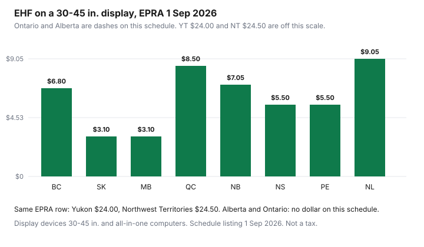

Household Items and Supplies · Canada
Environmental Handling Fees in Canada: Why Electronics, Batteries, and Appliances Cost More at Checkout
The extra line at an electronics checkout is usually an environmental handling fee, and it is not the same number in every province. Call2Recycle's FAQ, updated July 2026, defines an EHF as a charge for responsible collection and end-of-life management of a product. EPRA publishes the electronics schedules for the provinces in its programs. The listing used here is the steward update dated 1 September 2026, which is the current file linked from EPRA's product-definitions page when this guide was drafted. Older PDFs on that page are marked as previous versions, including July 2026 and August 2026.
Large-appliance delivery fees and British Columbia's major-appliance recycling fees are a different schedule. They stay on the fridge, washer, and dryer guide. This page is electronics, microwaves, and batteries. Whether a sale price is real after the fee is added belongs with the sale calendar and the price-match guide. Home Depot's guarantee, read 26 September 2026, excludes eco and environmental fees from the match, so compare totals, not stickers.
Key takeaways
- An EHF pays for collection and recycling. It is not a tax. RPRA says Ontario businesses choose whether to show a separate fee, and RPRA does not set the amount.
- EPRA's current listing opened for this draft is the 1 September 2026 steward schedule. A 30-45 inch display is $6.80 in B.C. and $3.10 in Saskatchewan on that row.
- Ontario and Alberta are dashes on that EPRA electronics table. Do not copy another province's fee into an Ontario checkout.
- Call2Recycle's AA single-use fees effective 1 July 2026 differ by province. Ontario's battery fees are not on the public schedule that was opened.
- Buying online is not described as an exemption. The obligated party decides whether to pass the fee on.
What an EHF is and who sets it in each province
EPRA's steward page points Alberta's electronics program to the Alberta Recycling Management Authority, the Northwest Territories program to the territorial government, and Yukon's program to the Yukon government's electronics recycling site. The fee table in the 1 September 2026 update has columns for British Columbia, Yukon, the Northwest Territories, Alberta (marked ARMA), Saskatchewan, Manitoba, Ontario, Quebec, New Brunswick, Nova Scotia, Prince Edward Island, and Newfoundland and Labrador. A dash means that row is not an EPRA fee in that column. Ontario's dashes are the important ones for shoppers who expect a national eco fee.
Call2Recycle's July 2026 FAQ says it operates approved battery programs in British Columbia, New Brunswick, Yukon, Saskatchewan, Manitoba, Quebec, Prince Edward Island, and Nova Scotia, and that it is a producer-responsibility organization in Ontario and Alberta. Members remit the fees. The FAQ says it is left to the obligated party, which can be a retailer, wholesaler, distributor, or manufacturer, to decide whether to pass the fee on to consumers. Fees differ because collection costs differ. The FAQ says rates are reviewed by Call2Recycle's board and can move up or down. The schedule opened for the dollar figures below says new rates in bold are effective 1 July 2026.
Examples: TVs, computers, microwaves, batteries (verify current schedules)
Use the size band, not "a TV." On the 1 September 2026 EPRA listing, display devices 30 to 45 inches, which also covers all-in-one computers in that size, are $6.80 in British Columbia, $24.00 in Yukon, $24.50 in the Northwest Territories, $3.10 in Saskatchewan, $3.10 in Manitoba, $8.50 in Quebec, $7.05 in New Brunswick, $5.50 in Nova Scotia, $5.50 in Prince Edward Island, and $9.05 in Newfoundland and Labrador. Alberta and Ontario are dashes. A 46-inch set is a different row, and Yukon and the Northwest Territories report those larger sizes under a single "46 inches and over" category. Do not apply the 30-45 inch fee to a 55-inch set.
Desktop computers on the same listing: British Columbia $0.85, Yukon $2.80, Northwest Territories $10.50, Saskatchewan $0.80, Manitoba $0.80, Quebec $1.00, New Brunswick $1.20, Nova Scotia $0.80, Prince Edward Island $0.80, Newfoundland and Labrador $1.20. Portable computers: British Columbia $0.50, Yukon $2.00, Northwest Territories $3.00, Saskatchewan $0.45, Manitoba $0.45, Quebec $0.60, New Brunswick $0.65, Nova Scotia $0.40, Prince Edward Island $0.40, Newfoundland and Labrador $0.60. Countertop microwaves: British Columbia $6.95, Yukon $10.94, Saskatchewan $3.85, Manitoba $3.85, New Brunswick $5.95, Nova Scotia $5.25, Prince Edward Island $5.25, Newfoundland and Labrador $6.95. The Northwest Territories, Alberta, Ontario, and Quebec cells on that microwave row are dashes. A dash is not zero that you can assume at the till. It means this schedule does not set an EPRA fee there.
Single-use AA batteries on Call2Recycle's schedule effective 1 July 2026, per unit: Yukon $0.10, British Columbia $0.06, Alberta $0.07, Saskatchewan $0.06, Manitoba $0.04, Quebec $0.06, New Brunswick $0.05, Prince Edward Island $0.06, Nova Scotia $0.05. The schedule says Ontario fee information is available by contacting Call2Recycle, so this guide does not print an Ontario battery amount. Newfoundland and Labrador and the Northwest Territories are not columns on that battery table. Rechargeable AA cells are a different row, higher than the single-use figures, on the same PDF. Quote the chemistry you are buying.
Ontario's different model: why you may not see a separate line
RPRA's page on environmental fees, read 26 September 2026, says Ontario businesses may recover recycling costs for batteries, household hazardous waste, information technology and audio-visual equipment, lighting, tires, and Blue Box materials either inside the price or as a separate fee. The regulations do not require the fee. RPRA does not charge it, does not mandate it, and does not set the amount. A visible fee must not be represented as a tax, a mandatory regulatory charge, or an RPRA fee. Consumers who think a fee is being misrepresented are pointed to the Ministry of Public and Business Service Delivery at 1-800-889-9768.
That is why an Ontario receipt can show no eco-fee line while a British Columbia receipt for a similar TV shows $6.80 from the EPRA row. The cost may be inside the Ontario sticker, or a business may add its own amount, which will not match EPRA's column because Ontario is a dash there. EPRA's 1 September 2026 letter also says Saskatchewan expects to expand regulated electronics in 2027, including small appliances and power tools. That is a steward notice about a future list, not a 2026 fee you can add today. The same letter gives Quebec stewards a Step 1 deadline of 15 October 2026 for recovery-and-reclamation reporting. That date is for organizations in the program, not a shopper holiday.
Compare prices apples to apples across provinces and online retailers
Compare the out-the-door total in the province the item is supplied into. A Quebec screenshot of a 30-45 inch display is missing the $8.50 EPRA fee if the seller has not added it yet, and a Saskatchewan screenshot is on a $3.10 schedule. Adding the fee from the wrong column makes both totals nonsense. Home Depot's price guarantee excludes environmental fees from the match, so a matched sticker can still differ at the pin pad. Ask for the fee line before you agree the prices are equal.
Call2Recycle's FAQ does not describe an online exemption. The obligated party decides whether consumers see the fee. An online retailer shipping into a province is still supplying into that province. If the checkout total omits a fee the schedule shows, ask before you treat the omission as a saving. If Ontario shows no line, do not subtract another province's fee to "correct" it. The fridge guide is where major-appliance stewardship, such as a separate provincial appliance program, is already written. Do not add those appliance dollars on top of an EPRA television fee.

What the fee gets you: free drop-off recycling
The fee is for the collection system, not a deposit you redeem. Call2Recycle's July 2026 FAQ says recycling keeps battery materials out of landfills and reduces fire risk from batteries thrown in the trash, and that the organization has nearly 15,000 collection locations in Canada, including retailers and municipal sites. EPRA's "what is the EHF" page does not itself explain the video in text; it links provincial recyclemyelectronics.ca pages for British Columbia, Saskatchewan, Manitoba, Quebec, Nova Scotia, Prince Edward Island, New Brunswick, and Newfoundland and Labrador. Use the provincial finder. Do not drive to a depot listed for a different program.
A dead battery or an old monitor goes to the drop-off even when you cannot see the fee on a years-old receipt. Repairing a working appliance can still be the cheaper path. That decision is the repair or replace guide. The fee does not change the repair arithmetic except as a cost you will pay again if you buy new.
Province table and where to drop off old items
| Province or territory | Program on the pages opened | 30-45 in. display | Desktop computer | Countertop microwave | AA single-use battery | Separate line on the receipt? | Drop-off starting point |
|---|---|---|---|---|---|---|---|
| British Columbia | EPRA and Call2Recycle | $6.80 | $0.85 | $6.95 | $0.06 | Not stated as mandatory on the pages opened. Compare checkout with this schedule | recyclemyelectronics.ca/bc, linked from EPRA |
| Alberta | ARMA for electronics, per EPRA. Call2Recycle lists an AA fee | Not on the EPRA schedule | Not on the EPRA schedule | Not on the EPRA schedule | $0.07 | Not stated here. EPRA points electronics questions to albertarecycling.ca | albertarecycling.ca for electronics. Call2Recycle locations for batteries |
| Saskatchewan | EPRA and Call2Recycle | $3.10 | $0.80 | $3.85 | $0.06 | Not stated as mandatory on the pages opened | recyclemyelectronics.ca/sk |
| Manitoba | EPRA and Call2Recycle | $3.10 | $0.80 | $3.85 | $0.04 | Not stated as mandatory on the pages opened | recyclemyelectronics.ca/mb |
| Ontario | RPRA producer responsibility. EPRA column is a dash. Call2Recycle is a PRO | Not on the EPRA schedule | Not on the EPRA schedule | Not on the EPRA schedule | Not on the public July 2026 schedule. Contact Call2Recycle | RPRA: a business may embed the cost or show a fee it sets. Not a tax | Ontario Recycles, named on RPRA's fees page |
| Quebec | EPRA for the display and computer rows. Microwave cell is a dash. Call2Recycle for AA | $8.50 | $1.00 | Not on this EPRA row | $0.06 | Not stated as mandatory on the pages opened | recyclemyelectronics.ca/qc |
| New Brunswick | EPRA and Call2Recycle | $7.05 | $1.20 | $5.95 | $0.05 | Not stated as mandatory on the pages opened | recyclemyelectronics.ca/nb |
| Nova Scotia | EPRA and Call2Recycle | $5.50 | $0.80 | $5.25 | $0.05 | Not stated as mandatory on the pages opened | recyclemyelectronics.ca/ns |
| Prince Edward Island | EPRA and Call2Recycle | $5.50 | $0.80 | $5.25 | $0.06 | Not stated as mandatory on the pages opened | recyclemyelectronics.ca/pei |
| Newfoundland and Labrador | EPRA. AA fee not on the Call2Recycle column set that was opened | $9.05 | $1.20 | $6.95 | Not on that battery table | Not stated as mandatory on the pages opened | recyclemyelectronics.ca/nl |
| Yukon | EPRA and Call2Recycle | $24.00 | $2.80 | $10.94 | $0.10 | Not stated as mandatory on the pages opened | EPRA points to recycleyukonelectronics.ca |
| Northwest Territories | EPRA column on the 1 Sep 2026 listing. Battery AA column not on the Call2Recycle table opened | $24.50 | $10.50 | Not on this EPRA row | Not on that battery table | Not stated as mandatory on the pages opened | EPRA points to the NWT electronics recycling page |
Sources & date stamps
- EPRA product definitions and fees, opened 26 Sep 2026: current listing is the 1 Sep 2026 PDF. July 2026 and August 2026 are labelled previous versions. Fee rows for displays, desktops, portable computers, and countertop microwaves are from that 1 Sep 2026 file.
- EPRA, What is the EHF, opened 26 Sep 2026: links to provincial recyclemyelectronics.ca pages. The steward page names ARMA, the NWT program, and recycleyukonelectronics.ca for the programs EPRA does not run.
- Call2Recycle EHF schedule, PDF dated for 1 Jul 2026 rates, opened 26 Sep 2026: AA single-use fees. Ontario amounts withheld because the PDF says to contact Call2Recycle. FAQ updated July 2026: definition of an EHF, provincial cost differences, pass-through is the obligated party's choice, nearly 15,000 collection locations.
- RPRA, Environmental fees on products sold in Ontario, read 26 Sep 2026: fee is optional, not a tax, not set by RPRA. Misrepresentation line: 1-800-889-9768.
- Home Depot price guarantee, read 26 Sep 2026: environmental fees excluded from the match.
Frequently asked questions
What is an environmental handling fee?
Call2Recycle's FAQ, updated July 2026, says an EHF is a charge for responsible collection and end-of-life management of a product. EPRA's current electronics listing opened for this draft is the 1 September 2026 steward schedule. The fee is not a government tax. In Ontario, RPRA's fees page says a business may charge a fee to recover recycling costs, RPRA does not set the amount, and the fee must not be represented as a tax or an RPRA fee.
Why do fees differ by province?
Programs and costs differ, and EPRA's 1 September 2026 schedule prints one column per province or territory, with several cells as a dash. Call2Recycle's July 2026 FAQ says battery fees reflect the cost to collect and manage batteries in that province. A 30-45 inch display is $6.80 in British Columbia and $3.10 in Saskatchewan on the EPRA row. Use the schedule for the province the item is supplied into.
Why don't I see an eco fee in Ontario?
RPRA says businesses may fold recycling costs into the price or show a separate fee, and the regulations do not require a fee. EPRA's 1 September 2026 schedule shows a dash in the Ontario column for the electronics rows in this guide. If a line appears, the amount was chosen by the business. Ask what the line is before you treat it as a tax.
Can I avoid the fee by buying online?
Not by a rule these pages describe. Call2Recycle's July 2026 FAQ says the obligated party, which can be a retailer, decides whether to pass the EHF on to consumers, and it does not describe an exemption for an online checkout. An online retailer shipping into a province is still supplying into that province. Compare the checkout total, including any fee line, with the schedule.
Where can I recycle old electronics for free?
EPRA's what-is-the-EHF page links provincial recyclemyelectronics.ca sites for British Columbia, Saskatchewan, Manitoba, Quebec, Nova Scotia, Prince Edward Island, New Brunswick, and Newfoundland and Labrador. Call2Recycle's July 2026 FAQ says the program has nearly 15,000 collection locations in Canada. Ontario's consumer page named on RPRA's fees article is Ontario Recycles. Use the locator for the province you are standing in; the fee is not a deposit you redeem at the counter.